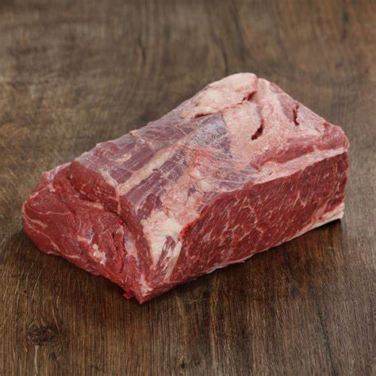
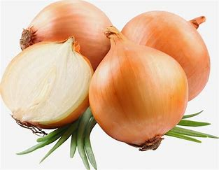

Ingredients
- Beef Chuck 
- Red Wine

- Carrots
- Onions 
- Bacon
Instructions
Brown the Beef and Bacon: In a large pot, heat olive oil and cook the bacon until crispy. Remove and set aside. In the same pot, brown the beef cubes on all sides. Add Vegetables: Sauté chopped onion, carrots, and minced garlic in the pot. Stir in tomato paste. Add Wine and Simmer: Pour in the red wine, scraping the pot to deglaze. Return the bacon, add beef broth, bay leaf, and thyme. Bring to a simmer. Cook Slowly: Cover and transfer to a preheated oven at 350°F (175°C). Cook for 2 to 2.5 hours until the beef is tender. Finish with Mushrooms: Sauté mushrooms in butter, then stir into the pot. Simmer for another 10 minutes. Serve: Garnish with fresh parsley and enjoy with bread, mashed potatoes, or noodles. .